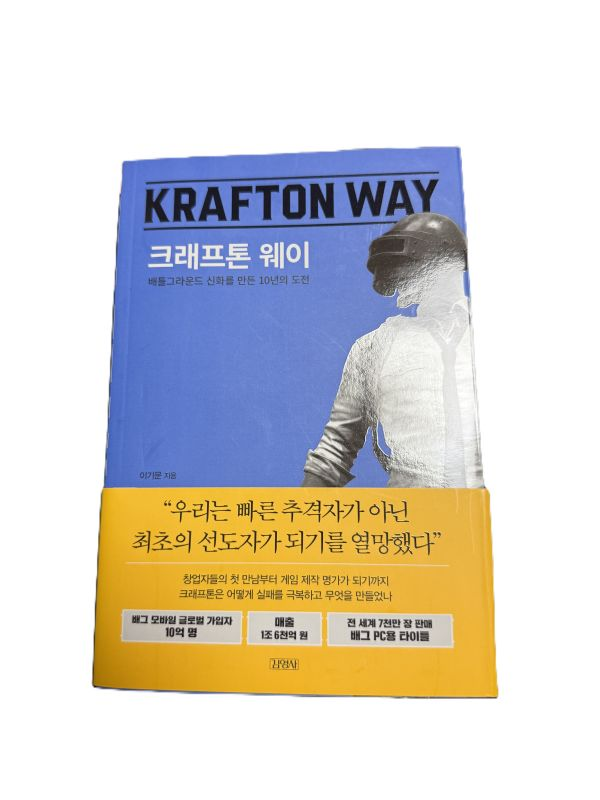

크래프톤 웨이

저자: 이기문
발행일: 2021년
이 책은 게임회사 크래프톤의 창업부터 10여 년간 겪은 성장의 기록이다. 2006년 실험기부터 2017년 배틀그라운드로 전환점을 맞기까지, 제품·조직·자금·문화가 어떻게 맞물려 움직였는지를 기업 관점에서 보여준다. 다만 내용이 경영적 의사결정, 조직 성장, 리스크 관리 등 비즈니스적인 맥락에 초점이 맞춰져 있어, 실제 게임 디자인 과정이나 개발 철학 같은 현장의 디테일은 깊게 다뤄지지 않는다. 어떤 고민 끝에 게임 시스템이 확정되었는지, 크리에이티브 과정에서의 시행착오는 무엇이었는지 같은 부분이 조금 더 디테일하게 나왔다면 좋았을 것 같다는 아쉬움이 남는다.
제작 리더십과 경영진의 역할
책에서 장병규 의장은 게임 제작의 주도권은 소수의 제작 리더십(디렉터 등)이 쥐어야 한다고 강조한다. 이들은 실제로 게임의 성공과 실패에 깊이 관여하며, 경영진은 이들의 결정을 견제·균형하는 역할을 맡는다.
또한 크래프톤은 검증된 제작 리더십은 많지 않다고 보고, 사내에서 새로운 리더를 길러낼 수 있는 구조를 만들려 한다고 밝힌다. 제작 리더십이 독립적으로 창작 방향을 정하고 경영진이 리스크를 관리하며 자원을 조율하는 이 구조는 대규모 조직에서도 창작 의도를 유지하게 돕는 안전장치로 느껴졌다.
퍼블리셔적인 시각
읽으며 느낀 점은, 이 책의 관점이 개별 스튜디오의 디테일보다는 퍼블리셔처럼 포트폴리오 전체를 관리하는 사고와 가깝다는 것이다. 제작 리더십이 창작을 주도하고, 경영진이 리스크를 줄이며 자원을 배분하는 구조는 여러 프로젝트를 운영하는 퍼블리셔의 방식과 유사하다.
실패에서 배우는 방법: 문서보다 사람
책에서 한 개발자가 “실패가 문서로 일부만 남는다면, 그 사이클을 겪은 사람이 잔류해야 실패가 다음 성공으로 이어질 수 있다”고 말하는 부분이 인상적이었다. 실패를 지식만이 아니라 경험으로 축적하는 관점으로 이해했다.
김창한 대표의 메시지
인상 깊었던 말은 “성공은 결과이지 목표가 될 수 없다”였다. 만들고 싶은 게임에 대한 로망을 세우고, 도전과 혁신을 거친 뒤, 효율적·효과적인 도전과 실패의 반복으로 성장한다는 3단계 사고가 제시된다. 대규모 조직에서도 창작의 열정을 잃지 않고 지속 가능한 성장을 추구하는 방법론처럼 느껴졌다.